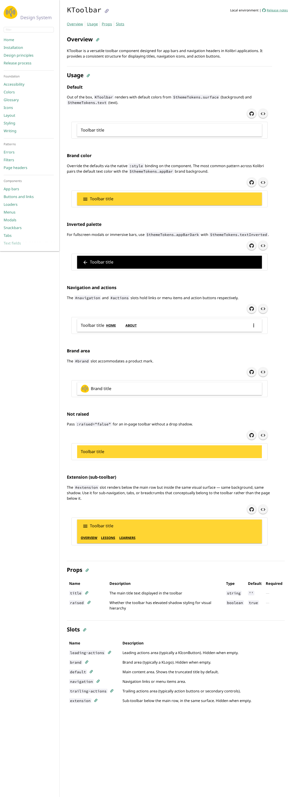
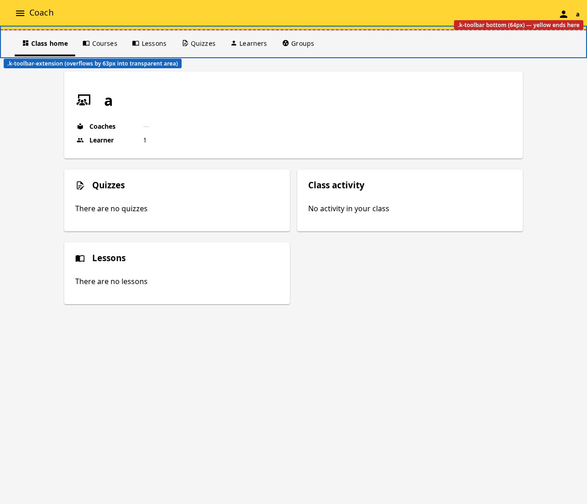
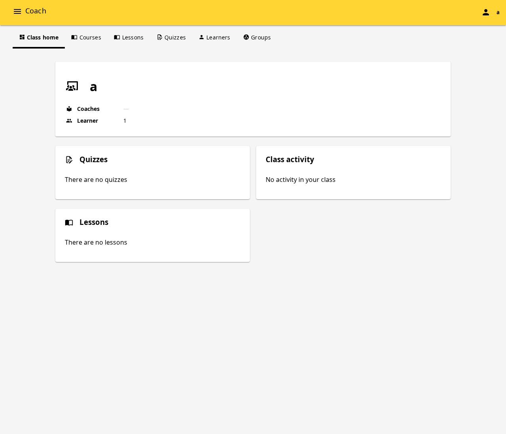
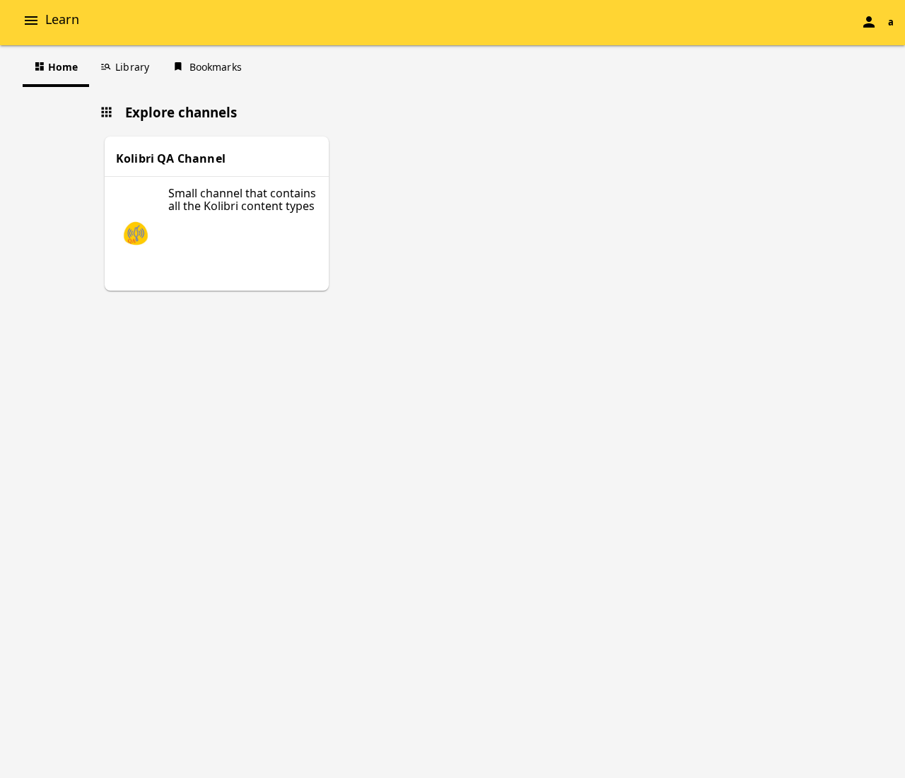

#extension slot height clip
Documenting a layout regression in Kolibri's AppBar after KDS PR #1236
introduced the #extension slot and dropped opinionated CSS defaults
(Path B). Sub-nav rendered in the #extension slot overflows the
height-capped .k-toolbar outer surface and lands in the transparent
area below the colored toolbar.
/ktoolbar on the deploy preview.k-toolbar surface expands to fit both .k-toolbar-main
(the row, fixed height) and .k-toolbar-extension (variable height).
Each example sets backgroundColor via :style on
KToolbar; the colored surface naturally extends to wrap both rows.
See the Extension (sub-toolbar) example near the bottom — main row + sub-nav
sit inside the same yellow surface, no transparent gap.

AppBar. The yellow
.k-toolbar outer is height-constrained to 64px by an
inline style="height: topBarHeight + 'px'" from
useNav() (Material spec: 56px small / 64px large). Inside it,
.k-toolbar-main is 56px and .k-toolbar-extension is 48px
(KDS min-height: 3rem) — total content needs 104px,
overflows the 64px cap by ~63px. The sub-nav (Class home,
Courses, Lessons, Quizzes, Learners, Groups) renders below the yellow surface
in transparent area.


height on
KToolbar's root caps the outer surface at 64px while
.k-toolbar-extension renders its full 48px height below the cap.
